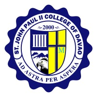

-
Property Custodian Chief

Christopher D. Tampos

Welcome to the Property Custodian Office at Saint John Paul II College of Davao! We are dedicated to maintaining a safe, organized, and well-managed environment for our students, faculty, and staff by effectively overseeing and managing the College's assets to support our educational mission.
Christopher D. Tampos